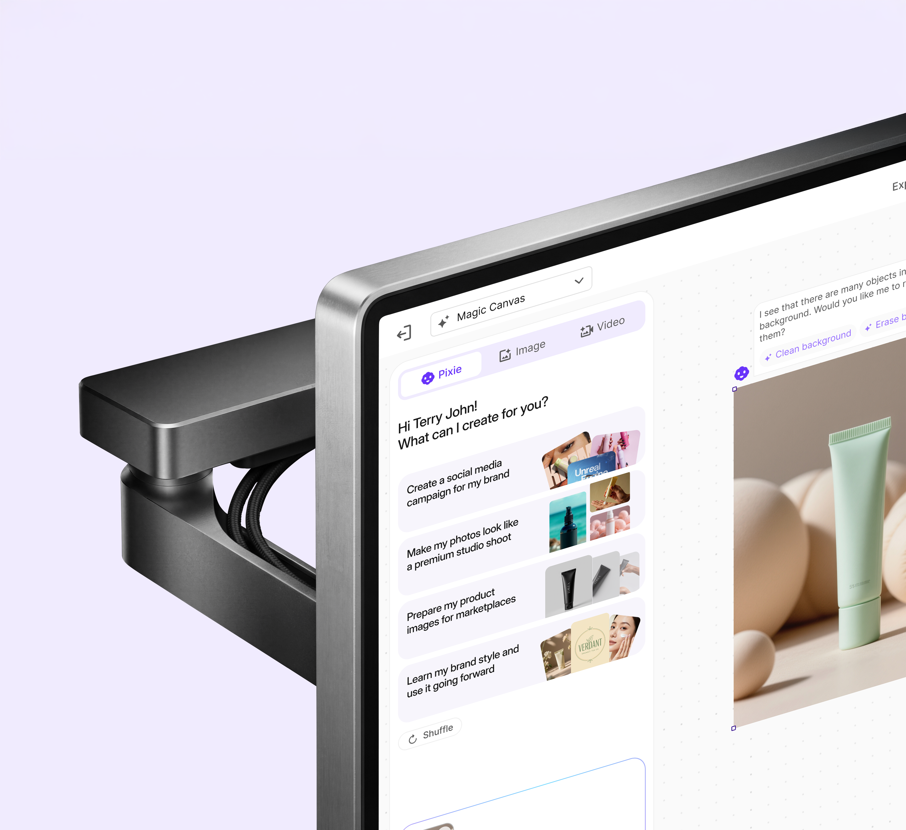

/Work/Pixelbin/Magic Canvas
Magic Canvas
What If AI Could Plan
an Entire Campaign?

An AI creative studio
built on PixelBin
Why This Product
Why We Built
Magic Canvas
A marketing manager preparing a Diwali campaign needs 4 Instagram posts, a banner and 2 stories — all matching. In most tools, each asset is generated separately, downloaded, moved to a layout tool, and repeated. The generation itself works fine. That meant repeatedly moving between generation, editing and layout tools while trying to keep the campaign visually consistent.
PixelBin already had the editing infrastructure — background removal, upscaling, watermark removal, batch processing — serving e-commerce customers through API. Magic Canvas put those capabilities inside a single workspace with an AI assistant called Pixie. I designed Pixie to lead the process: it analyses uploads, proposes what to do, and waits for approval before acting. The idea came from Jor-El in Man of Steel — an assistant that stays present and steps in without needing a prompt every time. We had two months from the start of design to production, so the scope had to stay tight.
Eight core flows.
One creative studio.
What If the AI Saw
the Problem Before
You Did?
Upload & AI Analysis
Why Change the Default
In most AI editing tools, an uploaded image sits idle until the user writes a prompt. The user diagnoses the image, picks the right tool, describes what they want. An uploaded image usually sits idle until the user decides what to do next.
How Pixie Responds
Pixie runs analysis the moment an image lands on the canvas. It surfaces what it finds — "I see many objects in the background. Clean background? Erase background?" — and the user taps to approve. No prompt needed. The user doesn't have to know what tools are available; Pixie tells them what it can see and offers to act on it.
How Does One Prompt
Become a Full Campaign?
Social Media Campaign
The Coordination Problem
A social media campaign needs several coordinated assets — posts, stories, reels — all on-brand. Generating each one separately means repeating the brand context in every prompt and manually checking consistency across outputs.
How Pixie Plans It
Pixie interprets a single intent into a multi-asset plan. The user approves the plan, provides brand context once, and Pixie generates all assets together. The canvas shows the full campaign at once — the user can compare outputs, swap individual pieces and refine the set before exporting.
Generation and Editing
in One Workspace
Generate & Edit Images
What the Workspace Includes
Users generate images and then need to edit them — background removal, upscaling, watermark removal, adjustments, resize — without switching tools.
The Prompt Bar
The prompt bar has 9 variants across Image, Video, and Pixie modes. Users can generate multiple variations from one prompt. Clicking any output reveals the editing toolbar — prompt editing, background removal, upscaling, watermark removal, adjustments and resize — all within the canvas.
What If You Could Just
Point at What You
Want to Change?
Select & Edit
The Limitation
Prompt-based editing applies to the entire image. If a user wants to change a dress colour, remove a single object, or adjust one element — they have to describe enough context for the AI to understand what to leave alone. Other tools solve this with mask layers, feathering controls, and lasso selections. Precision editing shouldn't require a Photoshop mental model.
The Interaction
Four steps: brush, select, describe, apply. The brush creates a spatial mask directly on the image — no layers panel, no feathering controls, no mode switching. The prompt field appears inline, anchored to the selection itself, not in a separate panel. Multiple selections can be stacked before applying, each with its own instruction. That thing, change it to this.
Can You Make a Video
Without a Camera?
Generate & Edit Videos
Three Routes, One Interface
Video generation has three different entry points: text-to-video, image-to-video, and motion control. Each calls a different AI model, but the user shouldn't have to know that.
Implementation Detail
All three video types share one flow with mode switching. V2 added a dedicated Motion Control toggle for granular camera parameters. For engineering, video was split into three separate implementations — each maps to a different AI model endpoint — but the user-facing interface stays unified.
What Happens When
You Give AI a Script?
Script to Video
How It Works
Same planning pattern as campaigns: the user provides a script, Pixie proposes a scene-by-scene breakdown, and generates each scene as a video clip on the canvas. Individual scenes can be reordered, regenerated or adjusted independently.
How Do You Edit
50 Images Without
Repeating Yourself?
Batch Image Editing
Scale
E-commerce teams apply the same edits — background removal, upscale, style adjustment — across hundreds of product images. Repeating that per image doesn't scale.
What I Left Out
The batch toolbar was designed as a subset of the single-image toolbar — 6 variants instead of 7. The missing tool is prompt-based editing, which requires per-image intent and doesn't scale to batch operations. The Template Builder extends this further: save an action sequence and reuse it across future batches.
What If You Could Create
a Brand Ambassador
That Never Existed?
AI Influencer
Consistency
AI-generated influencers need to look consistent across poses, outfits and settings while maintaining a specific demographic and aesthetic.
Structured Input
Instead of a freeform prompt, Pixie runs a structured interview — 5 questions covering niche, demographic, purpose, aesthetic and characteristics. The five inputs mapped directly to the parameters engineering needed for the persona endpoint.
The Scope
2
Months to production
8
Flows shipped
57
Components in production
1
Sole designer
Engineering Handoff
One Interface,
Three Model
Endpoints
I structured the Figma file by flow — every frame annotated with its state, transitions and edge cases — so engineers could trace any variant without a walkthrough. 57 shared components across all 8 flows kept the implementation consistent. The file covered 9 prompt bar variants, three separate video model integrations, and the deliberate exclusions documented alongside each toolbar.
Status
Live in
Production
All 8 flows are live on PixelBin Studio. I originally explored 14 flows; model cost and engineering effort narrowed the set to eight within the two-month production window. Everything that shipped was designed, handed off and built within that timeline.
Design Principle
AI that thinks
before it makes.
Still here
Good. Let's talk about what you're building. I'm Terry — a Senior Product Designer working across AI, commerce and fintech products. I'm looking for a permanent Product Design role in the UK and would require Skilled Worker sponsorship to relocate.
Open to permanent UK opportunities
Get in touch